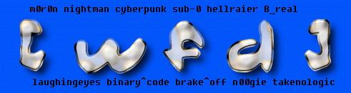

h3llRai3r and laughing3y3s 0wn these sites to make sure the world knows what is happening in the Middle East (Global Awareness is our motto) :-
www.shopfinder.sk
www.dasi.sk
www.dashofer.sk
www.dasi.com
www.mojjo.sk
Please read the facts :-
January 12, 2001 :
Five Palestinians were wounded by rubber-coated steel bullets in Ramallah, and two were wounded in Hebron, according to the Palestine Red Crescent Society. Two Palestinians were critically wounded by live ammunition in Khalil, near Hebron, the agency said.
Since September 28, when the latest round of violence in the 52-year-old conflict began, at least 392 people have been killed. The Red Crescent Society says that 336 of them were Palestinians, and the IDF says that 43 were Israeli Jews and 13 Israeli Arabs.
THE DEATH TOLL:
330 Palestinians dead, 41 Israelis dead
17,000 Palestinians wounded, About 100 Israelis wounded
Big difference here. And remember, it was Israel that began the current crisis by having 1000 Israeli troops storm the streets of Jerusalem, shooting at everything and everyone in their way, on Sept. 29. Now Israel has totally closed the West Bank and Gaza, preventing food, medical supplies, and other humanitarian needs to reach the victims of Israel's inhumanity, and making life even more of a nightmare for the Palestinian people.
Having Israeli soldiers shoot at Palestinian ambulances, fire missiles at kids, and enforce economic hardship on the Palestinians is not a good way of promoting peace m0sad. That only makes the Palestinian people more determined to get their freedom from you Israeli oppressors. The bombings happen because the people Israeli oppresses want change. They're sick of seeing their children being shot dead in cold blood by the sub-human Israeli soldiers. They're tired of being insulted and abused by the IDF in front of their children's eyes. They're fed up with Israeli soldiers routinely firing at their homes, farms, ambulances, etc. All the Palestinians want is their basic human rights...the right to live in the native land of Palestine they were born on, the right to be happy, to live life...the very rights Israeli scum deny them.
Links to check out for the REAL truth:
http://www.hoffman-info.com/palestine.html
WFD Members actively helping/defacing for the cause:
m0r0n, nightman, sub-0, n00gie, Cyberpunk, B_real, laughing3y3s, h3ll rais3r, B1n4ry C0d3, brake^off and Tå|{ê Ñø £Øgîç.
Shouts to :- Gforce Pakistan, m0s, doctornuker, m0r0n, nightman, sub-0, prime suspects, hackers hacking for a reason, dodi, quit crew (nitr8) and everyone supporting our cause!
We can be reached @ leandh3llrais3r@nightmail.com
Special thanks to nightman :)